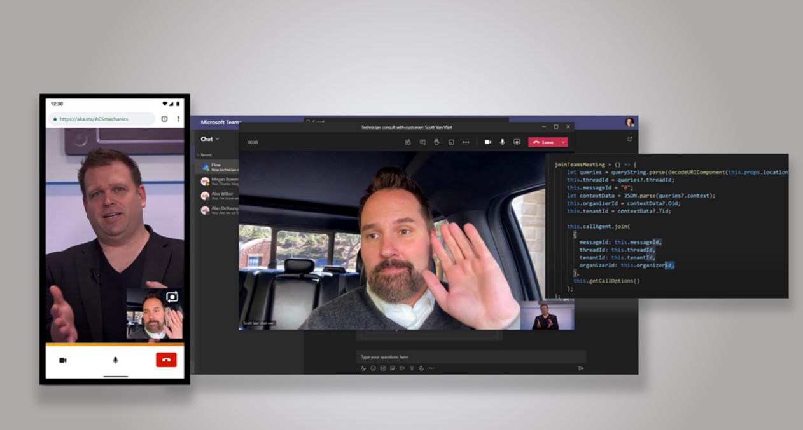
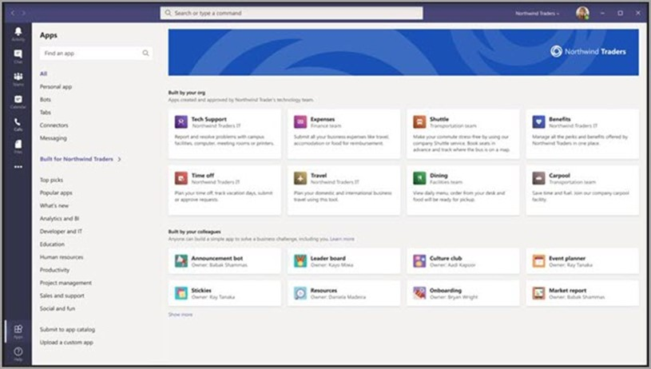
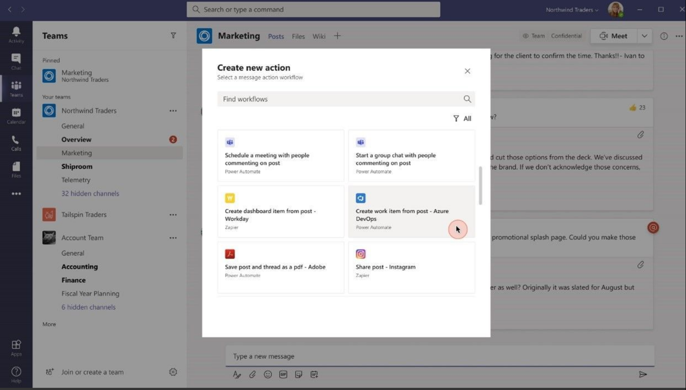
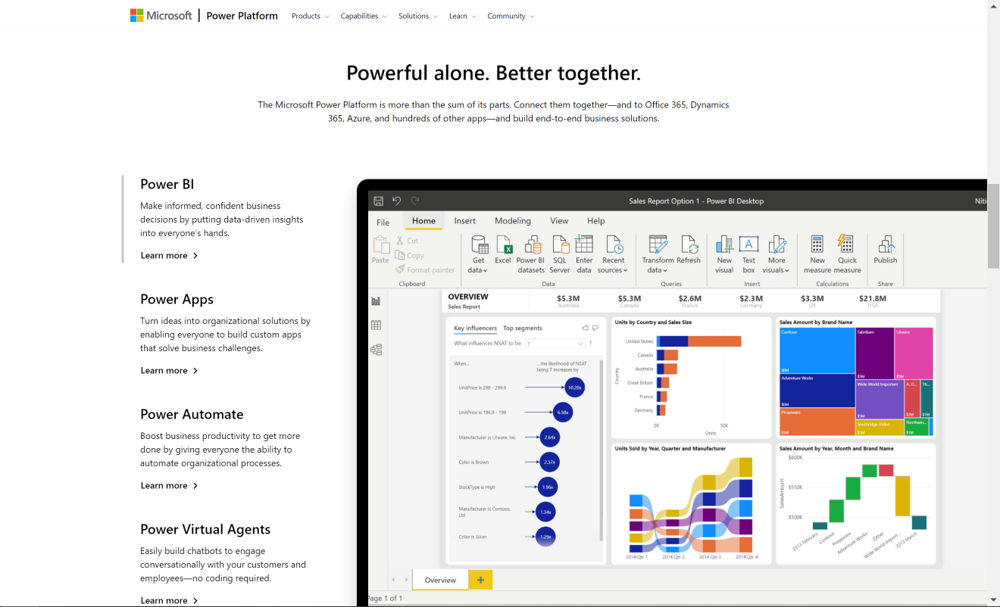

Microsoft Teams最新功能发布 – 平台篇
原文发表于 2021-03-08, 地址: http://www.cnblogs.com/chenxizhang/p/14500515.html
2021年的Microsoft Ignite大会，发布了一系列跟Microsoft Teams相关的新功能，英文介绍请参考 https://techcommunity.microsoft.com/t5/microsoft-teams-blog/what-s-new-in-microsoft-teams-microsoft-ignite-2021/ba-p/2118226 ，我这里用中文给大家做一个简单地解读，并加上我的一些批注。
这是最后一篇，针对Teams作为一个平台，给广大的用户、开发者、合作伙伴提供的更新。
现已支持Teams和 Azure Communication Service打通
可能有些朋友对Azure Communication Service还不太熟悉，这个服务是去年发布的。相传是把Teams中用于聊天，音视频会议等的核心功能，抽取出来放到了Azure上面，作为一个平台服务提供给广大的开发人员和合作伙伴。利用这个服务，你可以构建跟Teams同样等级的协作和沟通体验，是不是想一想都感到开心呢？关于ACS，有兴趣可以参考 https://azure.microsoft.com/en-us/services/communication-services/ 的介绍。
本次Ignite大会宣布的一个重量级功能，就是目前已经支持Teams用户跟使用ACS的用户（一般定位于外部用户，上下游客户），可以愉快地进行沟通了。员工可以直接使用Teams，然后客户可以使用ACS的功能模块，不管是嵌在网页中，还是自定义的app中。代码量真的不错，可以有效保护程序猿的头发。

自定义Teams 应用商店
现在在Teams admin center, 管理员可以定制自己公司的应用商店外观，包括公司logo，背景图，颜色等。请参考 https://docs.microsoft.com/en-us/MicrosoftTeams/customize-your-app-store

基于消息的自动化
这个功能确实太赞了。Teams 是一个基于聊天展开的协作沟通平台（chat-based Modern workplace）, 聊天不是工作的目的，有效地完成更多工作则是。那么，如何根据某个消息快速地发起一个任务，甚至流程。现在我们可以在消息的快捷菜单中，直接启动某个在Power Automate中定义的流程，真的是太方便了。
备注：在此之前，如果我们需要实现这样的功能，可以通过开发消息扩展。那么今天发布的这个调用Power Automate流程的功能，则是把这个能力大大地进行了提升，毕竟这是可以通过不写代码实现的。

微软去年发布的Power Platform，正逐渐引起越来越多的客户和用户的关注，使用的场景也越来越多。Power Platform的四个组件（Power BI， Power Apps，Power Automate，Power VirtualAgents）都可以和Teams 深度集成，不管你是专业的开发人员，还是业务用户，总有一款应用适合你。
我可能会在后期针对Power Platform 如何跟Microsoft Teams结合的场景，做一点专门的展开讨论，敬请关注。
